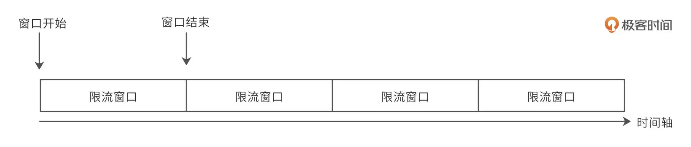

行情网关
网关
功能
- 作为入口网关, 为客户端提供一个接入地址, API网关将用户的请求路由到不同的行情业务服务器上
- 提供了服务治理功能, 支持行情服务的降级, 以及流量控制
- 服务监控的完善, 监控数据上报到n9e
性能
- RPC框架: Dubbo (2.6.7的版本)
- RPC请求时长. 超时控制
业务方调用超时时长为100毫秒 - IO模型 (IO多路复用)
服务降级
降级是为了保证核心服务的稳定而牺牲非核心服务的做法
因为机房单数据源问题, 存在机房数据源单点问题.
为了保证交易的核心业务, 将路透数据源冗余一份在网关机房.
冗余数据存储在redis中, 只包含最新价等行情数据.
接口切换规则可通过配置文件获取, 支持本地配置与远程文件配置. 远程文件配置优先于本地配置. 切换规则包括
- 全局切换: 针对所有市场的接口进行切换
- 市场切换: 针对某个市场下的所有接口切换
- 资源切换: 针对到某个资源(接口)切换
限流
使用了哨兵限流方案. 是网关服务的一个过滤器组件, 位于整个过滤器的前端, 请求如果超过了限流, 直接被限流器拒绝.
开发中采用了apollo跟哨兵限流整合的方案, 支持动态修改限流规则
压测
业务方调用网关服务, 网关服务请求下游服务.
核心接口的数据(最新价)是换存在服务的内存中
业务方的一次RPC请求, 会有两次网络调用
在4C8G的机器上. RPC压测最好结果为: 900QPS.
CPU最高到89%. 平均响应为34毫秒, tp99为95毫秒
限流方案
- 固定窗口限流
时间单位 unit 作为一个时间窗口，每个窗口仅允许限制流量内的请求通过
缺点: 一个限流时间单位内, 流量有可能超过设置的流量 - 滑动窗口限流
滑动窗口就是将限流窗口内部切分成一些更小的时间片，然后在时间轴上滑动
每次滑动，滑过一个小时间片，就形成一个新的限流窗口，即滑动窗口
再在这个滑动窗口上执行固定时间窗口算法 - 漏桶限流
用户请求先流入到一个特定大小的漏桶中，系统以特定的速率从漏桶中获取请求并处理 - 令牌桶限流
模拟一个特定大小的桶，然后向桶中以特定的速度放入令牌（token），请求到达后，必须 从桶中取出一个令牌才能继续处理。如果桶中已经没有令牌了，那么当前请求就被限流
服务监控
服务监控采用的skywalking链路监控系统.
skywalking的QPS监控并不十分精准, 且视图化效果不是很好
为了更好监控QPS, 基于dubbo的过滤器二次开发, 数据上报到n9e上
dubbo
dubbo事件派发策略
- 默认是all：所有消息都派发到线程池，包括请求，响应，连接事件，断开事件，心跳等。 即worker线程接收到事件后，将该事件提交到业务线程池中，自己再去处理其他事。
- direct：worker线程接收到事件后，由worker执行到底。
- message：只有请求响应消息派发到线程池，其它连接断开事件，心跳等消息，直接在 IO线程上执行
- execution：只请求消息派发到线程池，不含响应（客户端线程池），响应和其它连接断开事件，心跳等消息，直接在 IO 线程上执行
- connection：在 IO 线程上，将连接断开事件放入队列，有序逐个执行，其它消息派发到线程池。
dubbo线程池
- fixed 固定大小线程池，启动时建立线程，不关闭，一直持有(默认)
默认线程数为200, 任务队列使用的是SynchronousQueue.
超过线程数后, 会阻塞 - cached 缓存线程池，空闲一分钟自动删除，需要时重建。
limited 可伸缩线程池，但池中的线程数只会增长不会收缩。只增长不收缩的目的是为了避免收缩时突然来了大流量引起的性能问题。 - eager 优先创建Worker线程池。在任务数量大于corePoolSize但是小于maximumPoolSize时，优先创建Worker来处理任务
调用方式
支持同步和异步两种调用方式，其中异步调用还可细分为“有返回值”的异步调用和“无返回值”的异步调用
本博客所有文章除特别声明外，均采用 CC BY-SA 4.0 协议 ，转载请注明出处！